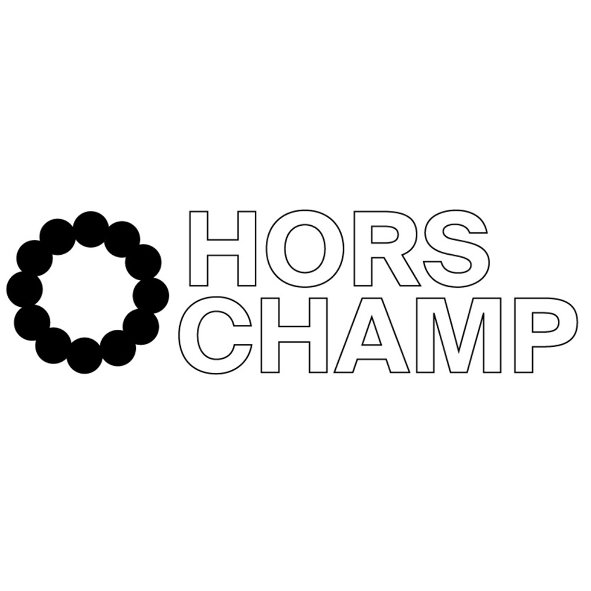
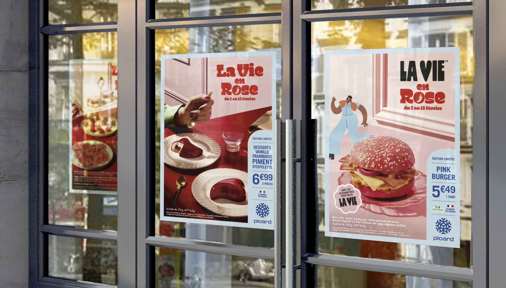
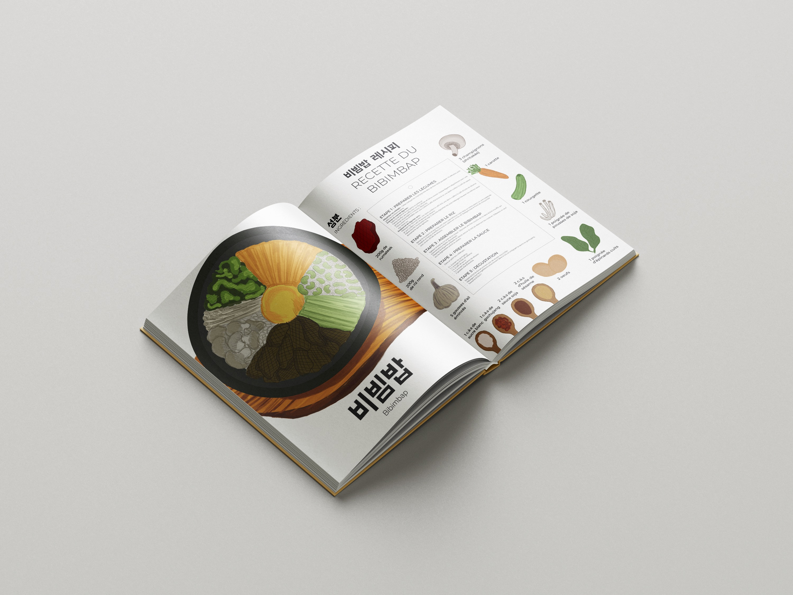
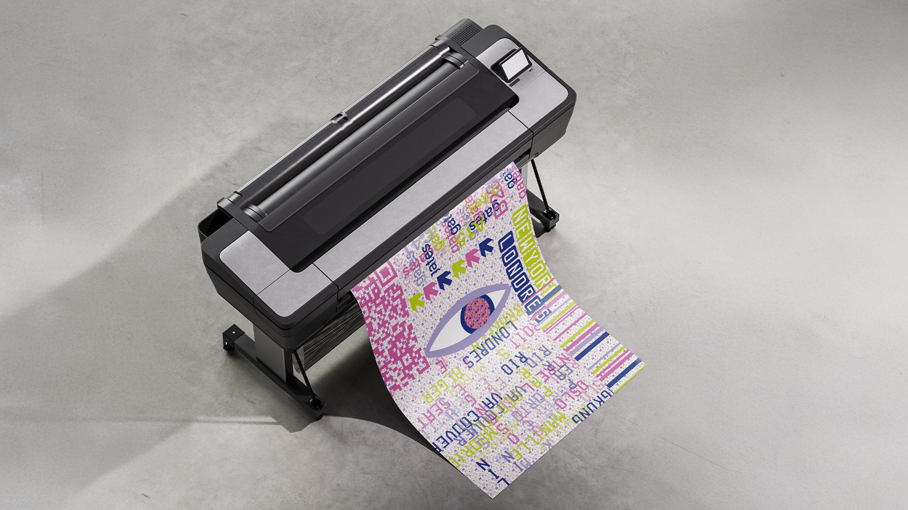

Design graphique,
digital & print
Designer graphique basée à Lille, diplômée du Bachelor Design Graphique et Imprimé à Lille. Je crée des identités visuelles et des expériences graphiques qui ont quelque chose à raconter.
Sélection de projets
Tous les projets →

Projet 360
Hors Champ

Édition & typographie
Typographie à la main

Alternance · DDB
Picard

Illustration
Livre de cuisine coréenne

Impression
Cacophtalmie